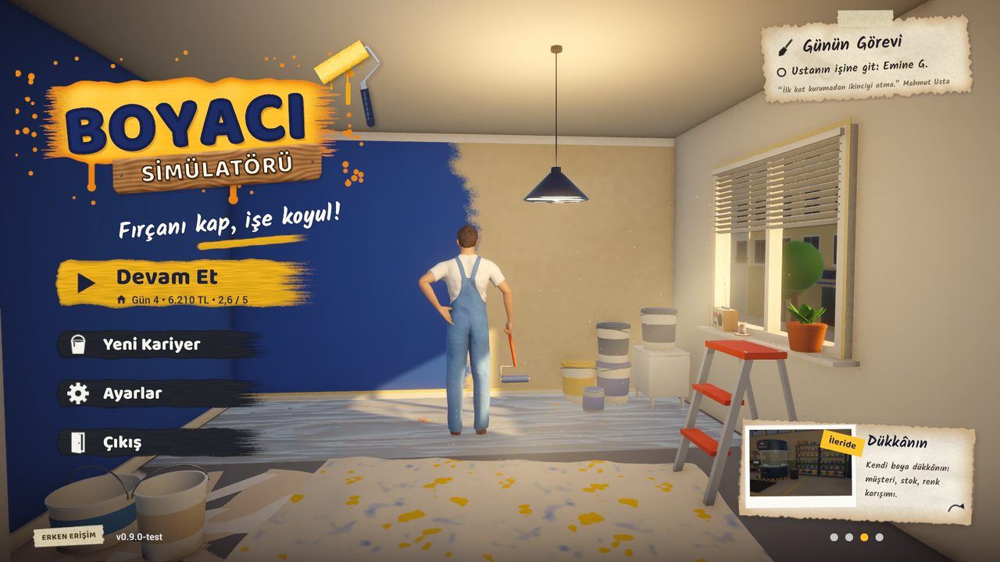
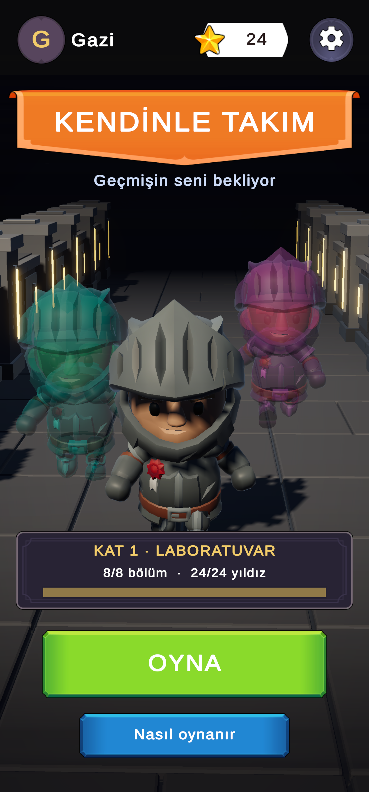

Painting Crew Simulator
Kendi küçük boya badana dükkânının patronusun. İlan panosundan işi kap, malzemeyi hazırla ve daireyi usulünce yap: naylonla ört, kazı, alçıyı çek, zımparala, fırça ve bantla kenarları kes, ruloyla iki kat at. Temiz iş, dolgun yevmiye; kazandıkça daha iyi aletler, renk makinesinde özel karışımlar ve daha büyük işler seni bekliyor.



Clone Runner
Zaman Kulesi'nde stajyerin ilk günü. Kırmızı düğmeye dokundun, kule kilitlendi. Her denemen geride bir yankı bırakır: yankın butona basar, kapıdan sen geçersin.


Oynanış videoları yakında.
14.11Painting Crew Simulator: fragman kurgusu tamamlandı.
08.11Painting Crew Simulator: usta dükkânı ve şehir haritası.
25.10Clone Runner: Kat 2, orman bölümleri ve platformlar.
23.10Clone Runner: giriş sinematiği. Stajyer kırmızı düğmeye dokundu.
22.10Clone Runner: ilk oynanabilir prototip.
> █
İçindekiler:
- logo/ SVG, PNG
- ekran_goruntuleri/ her oyun için
- bilgi_foyu.pdf
- fragmanlar/
Şimdilik basın talepleri için e-posta atın.
Gazobella Games
Gazobella Games, PC ve mobil için oyunlar geliştiren bağımsız bir stüdyo. Oyunlar Unity ile geliştiriliyor, modeller Blender'da hazırlanıyor.
Sevdiğimiz şey: tek cümleyle anlatılabilen, ama oynadıkça tuhaflaşan fikirler.
Kime: Gazobella Games
Konu: Merhaba!
Geri bildirim, iş birliği ya da basın için yazın.
E-posta gönderErişim reddedildi.
Bu klasör henüz kilitli. İpucu: ışıklar yeni bir dünyada yanacak.
✗ kirmizi_dugme_v1 — herkes bastı
✗ sonsuz_koridor — gerçekten sonsuzdu
✗ klon_dans_modu — fazla eğlenceli